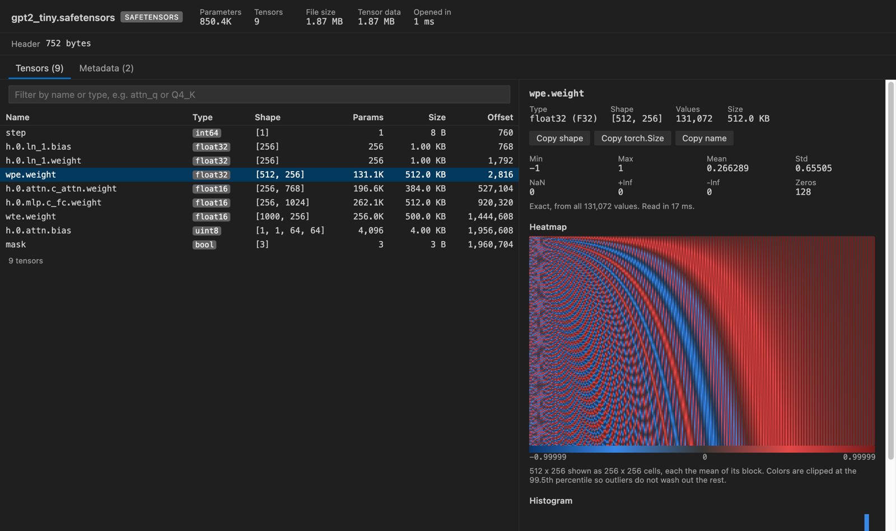

Open files in VS Code and Cursor / Machine learning files
Open a PyTorch .pth or .pt checkpoint without running it
A PyTorch checkpoint holds a Python pickle next to the raw tensor bytes, and torch.load runs that pickle, so loading a downloaded file in Python can run code. Tensor Viewer opens .pt, .pth, .ckpt and pytorch_model.bin files in VS Code without Python. It lists every tensor by its full name with dtype and shape, shows stats, a heatmap and the values, and reads the pickle as data without running it. Zovo Pro (USD 19 once) adds a scan of all tensors for NaN, Inf and zeros and a compare of two checkpoints, with 3 free tries each.
Free, MIT license. Extension ID zovo.tensor-viewer, version 0.6.5. Needs VS Code 1.90.0 or newer.

Steps in VS Code
- Install Tensor Viewer from the Marketplace, or press Ctrl+P (Cmd+P on macOS) and run
ext install zovo.tensor-viewer. - Click the
.pt,.pthor.ckptfile in the Explorer. Apytorch_model.binfile opens too. Other.binfiles do not open in Tensor Viewer by default. - Read the header. It shows the epoch, step and loss when the checkpoint stores them, and says whether
torch.load(weights_only=True)should load the file. - Find a tensor in the table. Names are full paths, such as
model_state_dict.fc.weightoroptimizer_state_dict.state.0.exp_avg. Type part of a name in the filter box. - Click a tensor for min, max, mean, std, NaN, Inf and zero counts, a heatmap and a histogram. The Values table pages through the numbers.
- Open the Metadata tab for hyperparameters and for every Python name in the pickle that is not a tensor. Each one has a safety rating, and a file that would call
os.systemorevalshows a red warning. - To use one tensor elsewhere, click "Save as .npy..." or "Save as CSV...". Tensor Viewer writes a new file and never changes the checkpoint.
Where Zovo Pro saves time
Opening PyTorch, safetensors, GGUF, NPY and NPZ files, the tensor table, stats, heatmaps, the Values table, the safety ratings and Save as .npy or CSV are free. Nothing in the file is run, and the viewer makes no network calls.
A checkpoint from a run that diverged can hold NaN or Inf in a few tensors, and clicking through every tensor to find them takes long. Scan All Tensors for NaN, Inf and Zeros reads every value of every tensor, with no sampling. It flags NaN, Inf, all-zero and constant tensors and very large values, with the exact min, max, mean, std and L2 norm of each tensor, and saves the report as CSV, Markdown or JSON. The other Pro tool compares two checkpoints tensor by tensor.
With Scan All Tensors for NaN, Inf and Zeros (Zovo Pro)
- With the checkpoint open, click "Scan all tensors" at the top of the viewer, or right-click the file in the Explorer and pick "Zovo Pro: Scan Tensors for NaN, Inf and Zeros".
- A notification shows the progress. Cancel stops a long run.
- Filter the report to "Only tensors to check" and save it as CSV, Markdown or JSON.
Scan All Tensors for NaN, Inf and Zeros works 3 times on your computer before it asks for a license, and a try counts only when you get a result. Opening a file shows no popup and no countdown.
Zovo Pro costs USD 19 once. It is not a subscription, and it turns on the Pro tools in every Zovo extension, not only Tensor Viewer. After a card payment (Stripe) your license key shows on the next page. In VS Code, run "Zovo Pro: Enter Zovo Pro license key" from the Command Palette and paste it. The key is checked on your computer, with no network call. With GitHub Sponsors, pick the "$19 one time" tier, then run "Zovo Pro: I already paid: unlock with GitHub Sponsors" and sign in with the same GitHub account. With PayPal, send USD 19 with "Zovo Pro" in the note and the key comes by email within a day.
A team of 5: USD 59 once, by card or by PayPal. Every rule and every Pro tool is on the Zovo Pro page.
Steps in Cursor, Windsurf or VSCodium
- Open the Extensions view with Ctrl+Shift+X (Cmd+Shift+X on macOS).
- Search for
zovo.tensor-viewerand click Install. Cursor, Windsurf and VSCodium install from Open VSX, where it is published aszovo/tensor-viewer. - If your editor has no gallery, download the .vsix from the Open VSX page and run "Extensions: Install from VSIX...".
- Then use it the same way as in VS Code.
What Tensor Viewer handles
- The
torch.saveZIP format (PyTorch 1.6 and later), the older format and TorchScript files. - State dicts, full training checkpoints with optimizer state, Lightning
.ckptfiles and whole saved models. - float16, bfloat16, float32, float64, integer, bool and float8 tensors. Complex tensors show as magnitude, and quantized tensors as their stored integers.
- Tensors saved from a GPU, read the same way as CPU tensors.
What it does not do
- Sparse, nested and meta tensors are listed with their shape but not decoded.
- Strided views over 256 MB that are not plain transposes are listed without values.
- For a tensor over 2,000,000 values, the stats come from a sample of whole rows, and the panel says so. The setting
tensorViewer.sampleValueschanges the number. - Custom Python classes in a checkpoint are not rebuilt. They show as rated placeholders on the Metadata tab.
- CSV export stops at 20 million values. Use .npy for bigger tensors.
Other options
- torch.load with weights_only=True. In Python,
torch.load(path, weights_only=True)loads only tensors and plain types and refuses other code. Needs PyTorch installed. - Netron. A free model viewer that draws the layers of many model formats and has some support for PyTorch files. It shows the graph more than the numbers.
Install counts and Open VSX status were checked on 13 November 2026. Descriptions in quotes are the extensions' own.
Questions
Is it safe to open a .pth file from the internet?
Opening it in Tensor Viewer does not run the pickle inside. Loading it with torch.load can, unless you pass weights_only=True. Check the safety ratings on the Metadata tab first.
Can I see the epoch and the loss?
Yes, when the checkpoint stores them. They show in the header and on the Metadata tab.
Can I compare two checkpoints?
Yes, with the Compare Two Checkpoints Pro tool. See Compare two PyTorch checkpoints.
Does it work in Cursor or Windsurf?
Yes. Cursor, Windsurf and VSCodium install extensions from Open VSX. Search for the extension in their Extensions view and install it there.
More about Tensor Viewer
Read the Tensor Viewer page for every feature and setting, or the source code on GitHub.
Related guides
- NPZ & NPY Viewer, PyTorch & Safetensors on the VS Code Marketplace (also on Open VSX). Shows arrays, shapes and values from .npy, .npz, .pth, GGUF and safetensors files.
- View .npy and .npz NumPy files in VS Code
- A safetensors viewer for VS Code
- Open a .npz file in VS Code
- Compare two PyTorch checkpoints
Zovo Pro and support
Zovo Pro: USD 19 once, every Zovo viewer. It turns on the Pro tools in this extension and in the other Zovo extensions you use. The free features stay free.
After a card payment your license key shows on the next page. Paste it with the command "Zovo Pro: Enter a key".
You can also support the work with no Pro:
Need your format supported?
Open a format request with a sample file, and I reply there whether it can be done. For USD 299 once, through this GitHub Sponsors tier, I add your file format or a missing feature to this extension, with tests, within 7 days.